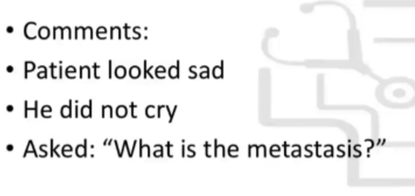

Source: Dr. Amir workshop — GIT 2026 / class 5 liver cases (Aug 2026 drop) · Specialty: gastroenterology
Your next patient is a 65-year-old lady complaining of dyspepsia and back pain. Investigations show microcytic hypochromic anaemia (low Hb, low MCV, low MCH) - suggesting iron-deficiency anaemia. A CT scan is provided.
Tasks: explain the investigation results to the patient; request further investigations.
Most common sites of colon cancer metastasis: liver, lungs, lymph nodes, peritoneum.
Introduce, then open question: "Jenny, I can see you've done a scan and blood tests. Can you tell me why you did them / what has happened so far?" → patient gives the complaint.
Blood test: "We did a Full Blood Count. We checked your red blood cells, which carry oxygen using haemoglobin. You have a low amount of haemoglobin, smaller red cells, and less haemoglobin in each cell than expected."
CT scan: "We've done a scan of your abdomen and checked your liver and gallbladder." Pick up the image: "I can see a number of circular lesions in your liver, which is abnormal and suggests some lumps/growths."
"Based on your dyspepsia and the iron-deficiency anaemia - meaning you may be bleeding from your stomach or bowel - I'm thinking about a bowel cancer or gastric cancer that has spread to your liver. I'm also concerned that your back pain may reflect spread to the bones and spine."
Investigations:
Introduce, open question: "I went through your files and believe you had a tough day yesterday. Can you tell me more / how are you feeling today?" → "Metastasis means a cancer has spread to another part of the body, in your case most likely from the bowel cancer." Offer support, emotional check, empathy ("I understand this may be shocking news"), tissue/water/silence, and reassurance.
Focused colon-cancer history: when diagnosed; treatment; regular GP/specialist follow-up; complications (general cancer screen - LOA, weight loss, lumps/bumps, tiredness; other - cough, bone pain; liver metastasis - jaundice, itch, dark urine/pale stool); family/social support (end-of-life, stage IV).
Management:

Reviewed by: history-taking-expert (Australian clinical supervisor) · fact-checked against the irStudy medical textbook RAG index.